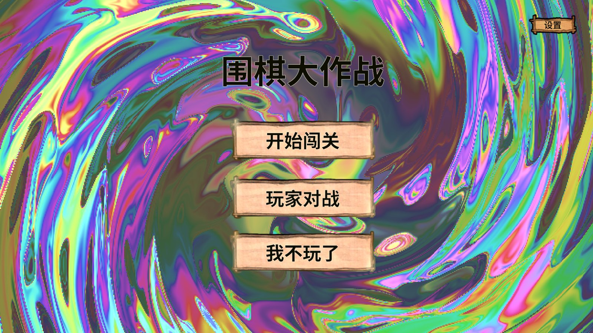
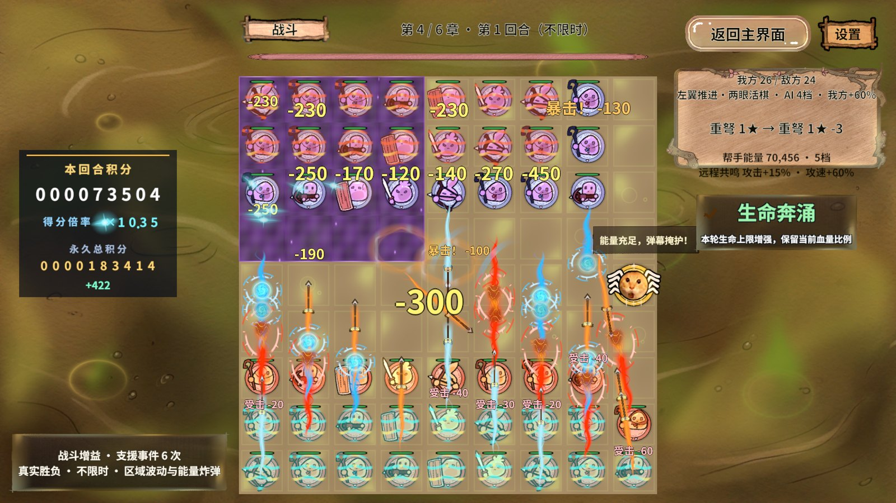
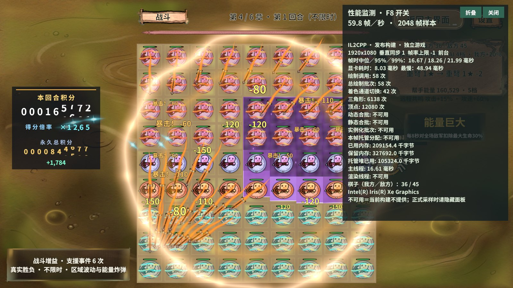
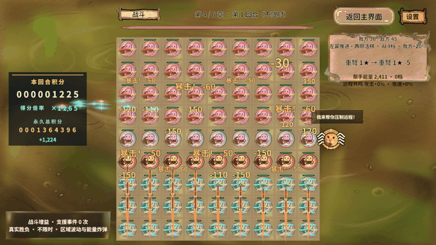
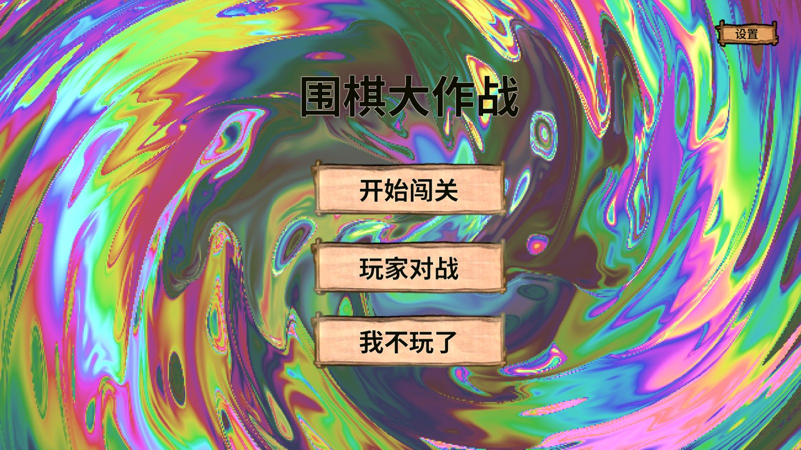

01 · 结论与验收范围
81棋满盘六章测试通过负载、采样完成和回收检查；48棋六章全部未通过固定负载验收。48棋在结束时均增加至50棋，性能数字仅作为本次动态负载观察，不能当作固定48棋基线。
81棋平均帧率 59.86–59.93 FPS，帧间隔P95 18.09–18.23 ms。在默认VSync=1条件下接近60 FPS，但P95超过16.67 ms；用户未指定达标阈值，本报告不宣称稳定60帧达标。
12段均完成至少30秒采样，累计 360.120 秒、21,550 帧，新增采样错误0，失焦帧0。所有12段正式回首页清理成功；另一次独立动态取证也完成清理。
02 · 实际环境与输入
| 项目 | 本次实测 |
|---|---|
| 构建 | RevGame.exe / IL2CPP / WindowsPlayer / 非Development / automation=true / frameTiming=true |
| 构建ID | 57f0ced867104716abece96448cf63a8 |
| Unity | 2022.3.15f1c1 |
| CPU / GPU | 12th Gen Intel Core i7-12700H / Intel Iris Xe Graphics |
| 渲染与窗口 | Direct3D11 / 1920×1080 / Windowed / fullscreen=false |
| 同步与帧率限制 | VSync=1，targetFrameRate=-1；未使用-revBenchmark，不解除同步 |
| 采样设计 | 六章 × 48/81棋 × 1轮；每段预热5秒、采样30秒；性能面板隐藏 |
| 启动隔离 | -revAutomation + -revTestSession；story.state isolated=true、scoreIsolated=true |
| 48棋输入 | 双方各24混合棋；结束均为我方26/敌方24（第4章画面核对），六段总棋数均50 |
| 81棋输入 | 玩家36/敌方45重弩，满盘；测试输入启用围困免疫以维持真实射击 |
| 种子与维持负载 | 项目夹具种子1025+章节；高生命且每秒补满存活棋生命；不是正常关卡难度 |
| 数据时间 | 2026-10-31，Asia/Shanghai；各段runId与UTC起止见下表 |
| 未改内容 | 本轮未修改或重打包游戏；不减少画质、棋盘、反馈预算以改善读数 |
夹具通过GameFlow进战斗、BattleService.LoadPerformanceScenario造局，攻击走正式逻辑。源码在造局时调用StopEnemyAI，实际BeginBattle后是否恢复全部AI行为未逐项验收；满盘本身不代表移棋/补子覆盖。资源来自该包自带内容，本轮没有重新执行AB构建门禁。
03 · 81棋六章性能（负载有效）
| 章 | FPS | P50 ms | P95 ms | P99 ms | 最大 ms | GPU P95 ms | >33.33ms | 棋数前→后 |
|---|---|---|---|---|---|---|---|---|
| 1 | 59.87 | 16.67 | 18.11 | 22.34 | 28.07 | 14.14 | 0.000% | 81→81 |
| 2 | 59.93 | 16.67 | 18.09 | 20.04 | 28.58 | 13.99 | 0.000% | 81→81 |
| 3 | 59.90 | 16.66 | 18.09 | 20.56 | 27.74 | 14.48 | 0.000% | 81→81 |
| 4 | 59.87 | 16.67 | 18.23 | 21.99 | 29.78 | 14.01 | 0.000% | 81→81 |
| 5 | 59.93 | 16.67 | 18.11 | 20.38 | 28.82 | 14.03 | 0.000% | 81→81 |
| 6 | 59.86 | 16.67 | 18.15 | 21.92 | 29.93 | 13.88 | 0.000% | 81→81 |
03 · 48棋六章性能（固定负载失败，保留原样）
| 章 | FPS | P50 ms | P95 ms | P99 ms | 最大 ms | GPU P95 ms | >33.33ms | 棋数前→后 |
|---|---|---|---|---|---|---|---|---|
| 1 | 59.63 | 16.66 | 17.55 | 20.26 | 173.77 | 14.57 | 0.056% | 48→50 |
| 2 | 60.00 | 16.66 | 17.62 | 19.36 | 24.93 | 14.39 | 0.000% | 48→50 |
| 3 | 59.89 | 16.66 | 17.62 | 20.76 | 31.51 | 14.36 | 0.000% | 48→50 |
| 4 | 59.93 | 16.66 | 17.71 | 20.44 | 26.70 | 14.22 | 0.000% | 48→50 |
| 5 | 59.37 | 16.66 | 17.90 | 22.49 | 168.99 | 14.03 | 0.224% | 48→50 |
| 6 | 59.90 | 16.66 | 18.01 | 21.90 | 26.20 | 13.87 | 0.000% | 48→50 |
04 · 绘制、内存与有效样本
| 负载/章 | 平均Draw Calls | 平均Batches | 平均SetPass | 平均主线程 ms | 平均Unity已用 MiB | 平均GC堆已用 MiB | GPU样本/帧 |
|---|---|---|---|---|---|---|---|
| 48 / 1 | 69.7 | 69.7 | 56.9 | 16.76 | 105.56 | 11.17 | 1786/1789 |
| 48 / 2 | 70.2 | 70.2 | 56.8 | 16.66 | 108.31 | 13.97 | 1797/1800 |
| 48 / 3 | 72.6 | 72.6 | 57.3 | 16.69 | 118.84 | 24.00 | 1794/1797 |
| 48 / 4 | 70.4 | 70.4 | 57.1 | 16.68 | 128.42 | 34.02 | 1797/1799 |
| 48 / 5 | 71.3 | 71.3 | 58.1 | 16.84 | 138.16 | 43.58 | 1779/1782 |
| 48 / 6 | 70.8 | 70.8 | 57.1 | 16.69 | 149.42 | 54.77 | 1794/1798 |
| 81 / 1 | 40.9 | 40.9 | 25.9 | 16.70 | 159.99 | 65.04 | 1793/1797 |
| 81 / 2 | 41.3 | 41.3 | 26.0 | 16.68 | 172.20 | 77.39 | 1795/1798 |
| 81 / 3 | 39.3 | 39.3 | 26.2 | 16.69 | 182.41 | 87.66 | 1794/1798 |
| 81 / 4 | 41.3 | 41.3 | 26.2 | 16.70 | 193.48 | 98.37 | 1792/1797 |
| 81 / 5 | 40.4 | 40.4 | 27.2 | 16.68 | 209.53 | 114.68 | 1796/1799 |
| 81 / 6 | 39.4 | 39.4 | 26.2 | 16.70 | 220.38 | 125.64 | 1792/1796 |
平均值只来自有效Recorder读数。GC Allocated In Frame、Render Thread、动态/静态/实例化批次本包均不可用，记为N/A，不是0。GC堆已用不是每帧分配；Unity已用内存不是进程私有内存、显存或峰值。主线程计时可能包含同步等待，不能直接解读为纯业务CPU耗时。
GPU只统计新时间戳且正值样本。GPU P95约14 ms不能单独证明GPU是唯一瓶颈；本轮未做停绘对照、温度/频率监测或CPU栈归因。
05 · 业务断言与清理证据
| 负载/章 | 采样/runId/时长 | 攻击增量¹ | 棋数一致 | 失焦帧 | 回首页/logic/引用 | MCP计划 |
|---|---|---|---|---|---|---|
| 48 / 1 | 通过 | 2034 | 失败 | 0 | 通过 / 0 / 0 | 失败：棋数 |
| 48 / 2 | 通过 | 2197 | 失败 | 0 | 通过 / 0 / 0 | 失败：棋数 |
| 48 / 3 | 通过 | 2786 | 失败 | 0 | 通过 / 0 / 0 | 失败：棋数 |
| 48 / 4 | 通过 | 2509 | 失败 | 0 | 通过 / 0 / 0 | 失败：棋数 |
| 48 / 5 | 通过 | 2582 | 失败 | 0 | 通过 / 0 / 0 | 失败：棋数 |
| 48 / 6 | 通过 | 2662 | 失败 | 0 | 通过 / 0 / 0 | 失败：棋数 |
| 81 / 1 | 通过 | 3987 | 通过 | 0 | 通过 / 0 / 0 | 通过 |
| 81 / 2 | 通过 | 4536 | 通过 | 0 | 通过 / 0 / 0 | 通过 |
| 81 / 3 | 通过 | 5450 | 通过 | 0 | 通过 / 0 / 0 | 通过 |
| 81 / 4 | 通过 | 4959 | 通过 | 0 | 通过 / 0 / 0 | 通过 |
| 81 / 5 | 通过 | 5022 | 通过 | 0 | 通过 / 0 / 0 | 通过 |
| 81 / 6 | 通过 | 5040 | 通过 | 0 | 通过 / 0 / 0 | 通过 |
¹攻击增量取采样begin之后、等待完成之前的前值与完成后的后值；包含预热及轮询间隙，不能除以30秒当作精确攻击频率。只证明真实攻击持续发生，不证明每颗棋都攻击或每次伤害都正确。
在线断言：前置隔离、初始棋数、ready、无切场、采样completed/success/errors=0/cancelled=false、结束棋数、返回Home、cleaned=true、logic=0、pieceRefs=0。离线交叉核对：begin与完成runId相同、实测时长≥30秒、攻击增加、失焦帧=0。负载只在首尾核对，本轮没有逐帧人数最小值记录。
清理的pieceRefs只代表PieceFrames图集引用；cleaned还要求BoardView不存在。服务可能保留棋盘数据（回首页状态仍返回棋数），不能把该清理断言扩展为全部托管对象或全部资源零存留。
06 · 首次失败、风险与下一步
第一个业务失败：第1章48棋采样结束后，/data/pieces == 48实际为50。六章一致复现；原始失败未覆盖、预期未放宽，也未通过删棋或关闭支援制造通过。第4章截图显示我方26/敌方24。
现有ReinforceFromHand/TryDeployReinforcement正式逻辑能增加我方棋子，与该现象相符，但本次没有逐次落子事件追踪，不能把具体来源写成已证实。建议先为夹具增加人数变化/落子来源记录，再决定固定负载契约如何处理正式援军；修复后用同包条件重测。
48棋第1章最大帧间隔173.77 ms、第5章168.99 ms，均保留在表中。当前缺乏同步CPU/GPU事件栈，不能确定由GC、驱动或调度导致。其余段P95仍超过60FPS帧预算，后续应先定位尖峰，再谈优化收益。
连接准备阶段：系统默认Python 3.7在启动器atomic_json收尾触发unlink(missing_ok)兼容错误；切换工具自带Python并核对身份后恢复。首次启动未传-revTestSession，story.state发现未隔离，未造局即正常退出；重启隔离后才开始所有压测。没有修改安装包来绕过问题。
07 · 实际MCP调用顺序
- CLI player.launch启动独立包并核验pid/launchId/sessionId/buildId；CLI启动不冒充MCP。
- RevMCP显式指定Unity工程与本次runtime.json建立stdio会话，
rev_discover发现实际能力；重启隔离Player后重新发现。 rev_call(game, runtime.identity)核对IL2CPP身份；初次rev_call(story.state)发现隔离未开启。隔离会话由rev_run前置计划重新断言隔离。rev_run逐段：game.performance.prepare(chapter=1..6,pieces=48/81) → state.ready → runtime.performance.begin(seconds=30,warmup=5) → state.completed → 负载与日志断言。- finally：窗口外截图/日志（第1段失败后直接清理）→ cancel → disable → game.performance.cleanup → state.cleaned。
- 另一次
rev_run完成第4章81棋12帧动态取证与首页截图，不计入性能窗口。GM工具本轮未执行，使用已注册结构化业务能力。
08 · 运行身份与可追溯性
| 负载/章 | runId | 开始UTC | 结束UTC | 实测秒 |
|---|---|---|---|---|
| 48 / 1 | ab691801724c405d839e876d0ce71b34 | 2026-10-31T07:52:30.2634642Z | 2026-10-31T07:53:05.2772818Z | 30.0003 |
| 48 / 2 | 962c044ee5974b6b925eb7425291c542 | 2026-10-31T07:54:37.2120878Z | 2026-10-31T07:55:12.2265863Z | 30.0000 |
| 48 / 3 | 0bac2c59966e41338f0dfe5a00558ef4 | 2026-10-31T07:55:26.5611406Z | 2026-10-31T07:56:01.5752519Z | 30.0036 |
| 48 / 4 | 80584bd553b74484aceb09099612b88f | 2026-10-31T07:56:16.4112744Z | 2026-10-31T07:56:51.4419445Z | 30.0163 |
| 48 / 5 | cbae6378b78749c48b1c341572c022c9 | 2026-10-31T07:57:05.8097817Z | 2026-10-31T07:57:40.8411061Z | 30.0164 |
| 48 / 6 | 62125625758941d6a4cc72129b5a2daf | 2026-10-31T07:57:55.5759347Z | 2026-10-31T07:58:30.6071084Z | 30.0164 |
| 81 / 1 | ddd3ea94308e41d4a65cef2273ff4535 | 2026-10-31T07:58:45.0094163Z | 2026-10-31T07:59:20.0412804Z | 30.0162 |
| 81 / 2 | b21b65b2d3bb437bb15e5aed60fa68d7 | 2026-10-31T07:59:41.3747686Z | 2026-10-31T08:00:16.3906188Z | 30.0004 |
| 81 / 3 | 8a5f3374c825455d9ebb0979819ec6ae | 2026-10-31T08:00:31.0608301Z | 2026-10-31T08:01:06.0897183Z | 30.0165 |
| 81 / 4 | 472552ee8b9e4c6ea5e80902092341db | 2026-10-31T08:01:20.7578758Z | 2026-10-31T08:01:55.7887993Z | 30.0161 |
| 81 / 5 | 58cd557e5ae14d7f9b27a4137b0e61b6 | 2026-10-31T08:02:17.4743056Z | 2026-10-31T08:02:52.5048621Z | 30.0162 |
| 81 / 6 | c2e484677ba6410b8fdf93d761dae16c | 2026-10-31T08:03:07.4557367Z | 2026-10-31T08:03:42.4730912Z | 30.0014 |
09 · 真实画面与动态证据
原始1920×1080 PNG转换为1600宽JPEG，GIF宽720；仅压缩缩放，不裁剪、拼接或美化。图片证实画面，不替代业务数值断言。首次失败的第1章现场未截图；保留第4章同类失败的实际现场。









10 · 框架可行性与未验证项
这份非开发IL2CPP包验证了RevRuntimeAutomation + RevMCP的独立Player连接、真实负载调度、GPU/绘制/内存摘要、断言及finally清理链路可运行。游戏继续通过GameFlow、RevLogic、RevTimer、RevEvent和资源引用计数完成场景与生命周期管理；无需改动框架快照。项目固定48棋夹具与现有战斗补子行为存在契约不一致，当前不能交付“全部压测通过”的结论。
未验证：Android真机、10分钟连续单场、重复多轮统计置信度、温度/降频、电池、进程/显存峰值、逐帧GC分配、全部AI/六章Boss机制、每颗棋的攻击公平性、冷AB白图完整门禁、全部资源租约、优化前后收益。六章各30秒不等于单场连续6分钟。未生成ZIP，未导出Profiler录制或内存快照。